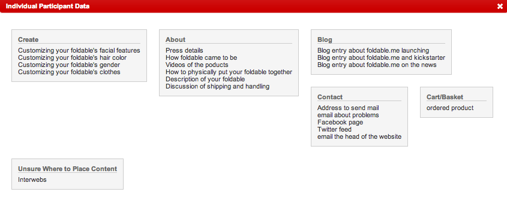
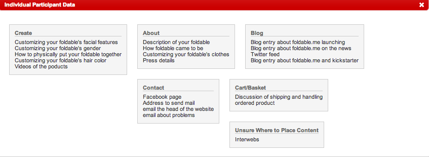
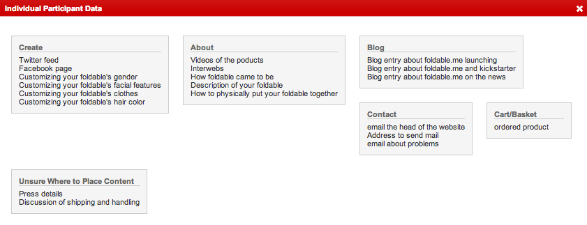
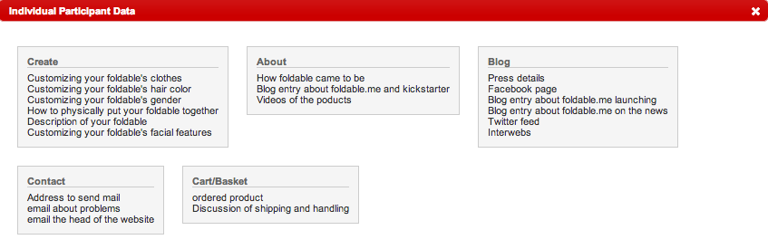

My sort was very similar to the architecture of the website, I think this is probably because I navigated through the website in order to pull the data to sort from, so I was already influenced by seeing how the website was laid out. The website's information was also organized fairly intuitively, so I think that is also why, when I sorted my cards, I did not differ much from the original layout of foldable.me.
My friend's sorts were rather scattered. I would have to blame this on my faulty categorization skills; I had a hard time creating cards for foldable.me, because their layout was not really link-based, rather, you visited one of their main pages (create, blog, contact) and it was filled with a whole chunk of content. Like, an app for creating a foldable, their blog posts, and their contact information. So, I think I confused my friends. Despite this, their sorts still stayed pretty true to the original site, so I suppose that's a good sign for foldable.me.